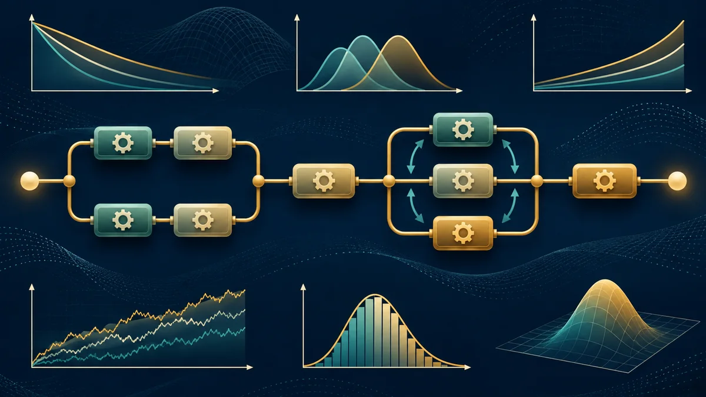
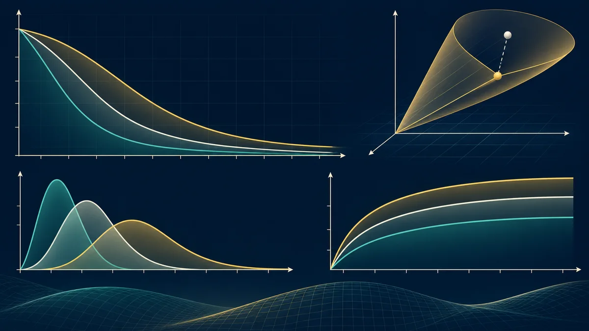

2026
On different failure mechanisms of random weighted coherent systems based on a new structure-based performance measure
With N. K. Hazra and N. Balakrishnan · Annals of Operations Research
Statistics · Reliability · Survival
Assistant Professor, Department of Mathematics
Indian Institute of Technology Palakkad
After completing my undergraduate and postgraduate studies from Vidyasagar University, I obtained a Ph.D. in Probability and Statistics from the Department of Mathematics at the Indian Institute of Technology Jodhpur, India, under the supervision of Dr. Nil Kamal Hazra. Subsequently, I was a postdoc in the Department of Mathematics and Statistics at the Indian Institute of Technology Kanpur, India, under the supervision of Prof. Neeraj Misra. I work primarily in the areas of statistics and reliability theory.

Research
My research interests lie at the intersection of Survival Analysis, Reliability Theory, Stochastic Order-Restricted Inference, and Robust Statistical Inference.
Statistical modelling and inference for censored lifetime data, including cure, frailty, competing-risk, transformation, and mean-residual-life models.
Explore this
Stochastic modelling and inference for coherent systems, sequential order statistics, load-sharing structures, ageing, and component allocation.
Explore thisDivergence-, generalized-likelihood-, and spacing-based procedures designed to retain inferential stability under contamination, censoring, and model misspecification.
Explore this
Nonparametric and semiparametric estimation and testing under stochastic-order, hazard, ageing, and shape restrictions.
Explore thisSelected publications
A short selection is shown here. The Publications page contains the complete chronological list.
2026
With N. K. Hazra and N. Balakrishnan · Annals of Operations Research
2026
With N. Misra and N. K. Hazra · Statistics
2026
With N. K. Hazra and M. Finkelstein · Probability in the Engineering and Informational Sciences
2025
With N. K. Hazra and N. Balakrishnan · Quality and Reliability Engineering International
2025
With N. K. Hazra and N. Balakrishnan · Annals of Operations Research
Recent updates
Invited talk at the Conference on Data-driven Statistical Decision Making, IIT Hyderabad.
Paper presentation at the International Conference on Mathematical Optimization Theory and Applications, IIT (BHU).
Three new papers in reliability, mixture comparison, and stochastic lifetime modelling.
Teaching
Course pages will collect syllabi, lecture notes, assignments, simulation code, references, and announcements as materials become available.
MA6610
Graduate inference, likelihood methods, asymptotics, testing, interval estimation, and simulation-based computation.
Course overviewProject / materials
Statistical methods for curves and functions, with connections to longitudinal, survival, and high-dimensional data.
Teaching materialsUndergraduate
Probability models, random variables, distributions, estimation, testing, and applications for data science.
Course overviewContact
Department of Mathematics, IIT Palakkad, Kanjikkode, Kerala 678623, India